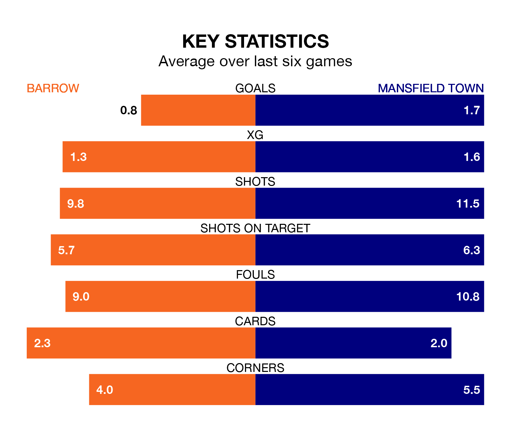

Barrow are on a terrible run ahead of hosting Mansfield Town at the SO Legal Stadium on Saturday, with just one point collected from their last six games.
The Bluebirds have picked up just one draw in their last six EFL League Two games, and face a Stags side whose last six games have brought four wins and two losses.
With 89 goals in 45 games so far this season, Mansfield are the league's joint-second-highest scorers with 2.0 goals per game. And they are conceding fewer than average, letting in 46 goals at a rate of 1.0 per game.
Barrow, meanwhile, are below average scorers, with 1.4 goals per game, compared to a league average of 1.5. They have conceded 1.2 goals per game.
Town are second in the table after 45 games, of which they have won 24 and drawn 13, earning 85 points.
The Bluebirds are five places behind the Stags in seventh, with 18 wins and 14 draws putting them on 68 points.
In the last 10 years, Barrow and Mansfield have played each other on eight occasions. They won four each.
On average, the Bluebirds scored 1.4 goals and the Stags 1.2 in those matches.
Their last meeting was on September 23, when Mansfield won 1-0 at home.
With Paul Farman between the sticks, the hosts can rely on one of the league's safest pair of hands. He has kept 14 clean sheets in his 43 appearances this season, and only two other 'keepers – Stockport County's Ben Hinchiffe and AFC Wimbledon's Alex Bass – have been able to prevent the opposition scoring on more occasions in EFL League Two.
In the away team's net, Christy Pym also has 14 clean sheets in 45 games.
Barrow's last match was on Tuesday, a 2-1 loss against Bradford City, with Kian Spence getting the goal for the Bluebirds.
Mansfield beat Gillingham 2-1 last time out, on April 20, with Davis Keillor-Dunn and Stephen McLaughlin on the scoresheet.
Updated: 07:59 (UTC), 26/04/24